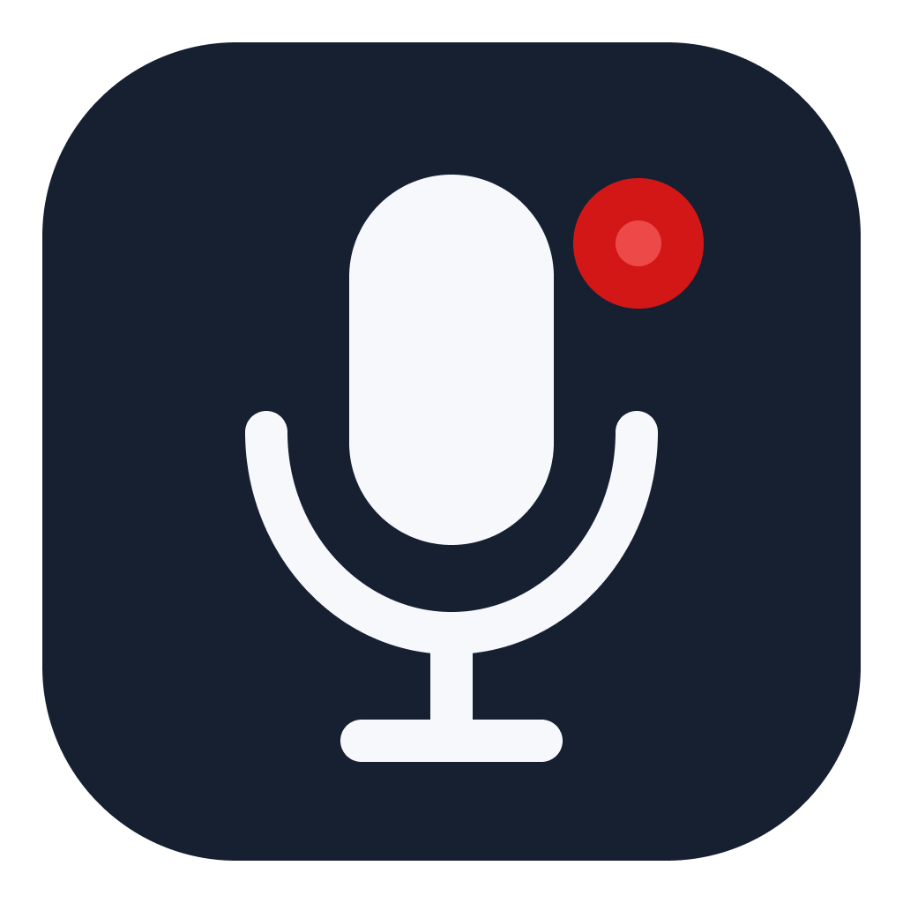

Finder
File
Edit
View
Go
Window
Help
2026-09-29 18:42
🔴 Start recording
Microphone
›
Output format
›
Set output folder...
Open recordings folder
Current folder: /Users/you/Downloads
About OneClick Audio Recorder
Quit
Current: WAV
WAV (uncompressed)
MP3 (compressed, smaller size)
One dot in your menu bar.
Click. You're recording.
Click again. Saved.
~/Downloads/audio-recording-2026-09-29T16-42-07-512Z.wav
Right click: microphone, format, folder.

OneClick Audio Recorder
Capture every thought in one click.